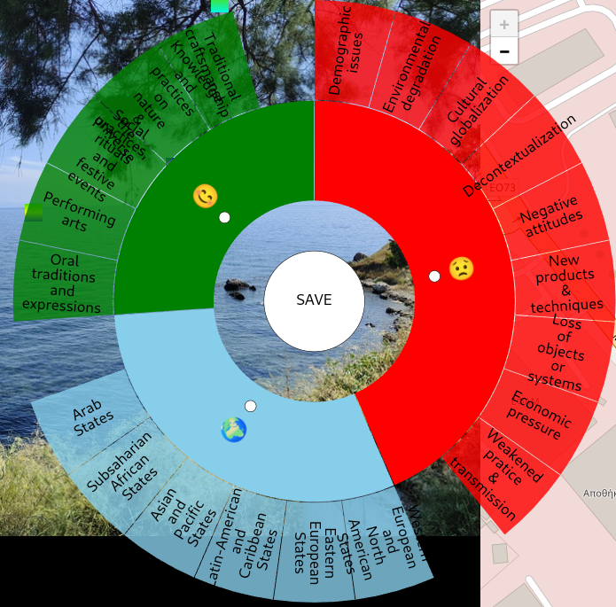
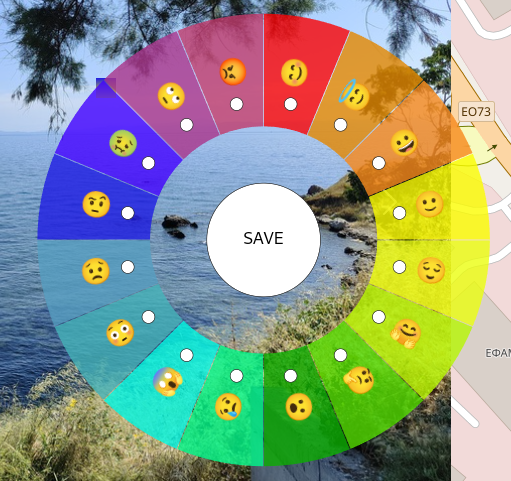

Cocult prototype
1 Introduction
Le dispositif numérique que nous avons conçu et développé dans le cadre du projet CoCult au sein du programme scientifique ERUA a pour ambition de faciliter le partage des cultures dans un territoire. Ce nouvel outil répond aux difficultés rencontrées lors du l’utilisation des outils déjà disponibles comme Historipin ou PhotoMap. Par exemple, nous ne pouvions pas avec ces outils :
partager facilement un espace commun
indexer les documents ou leurs parties avec un vocabulaire formaliser
créer des itinéraires
intégrer les données dans un écosystème numérique ouvert et dédié au Linked Open Data
Pour répondre à ces besoins, nous avons conçu un environnement numérique accessible à l’adresse suivante : https://artnum.univ-paris8.fr/cocult/tags.html
Il a été développé dans un écosystème Web qui prend en compte une interface adaptable à toutes les écrans, les recommandations du Linked Open Data et du logiciel libre. Ce prototype est une application Web qui fonctionne en relation avec une base de données Omeka S pour lire, enregistrer, mettre à jour et supprimer les données. Tous les codes informatiques nécessaire à son fonctionnement sont accessibles ici : https://github.com/samszo/cocult/
1.1 Principes et objectifs du prototype CoCult
Premièrement, nous adoptons les principes FAIR de la science ouverte : https://www.go-fair.org/fair-principles/
Le premier objectif de ce prototype est de récolté des photos dans un territoire à partir d’un téléphone portable connecté au réseau des données mobiles et au système de géolocalisation GPS. Ces deux conditions devront sans doute être modifiées pour envisager un usage sans connexion au réseau mobile ni au GPS.
Le second objectif consiste à associer les photos à un itinéraire particulier afin de tracer un parcour dans un territoire.
Le troisième objectif est la description des photos avec un vocabulaire formalisé afin de rendre interopérables ces descriptions tout en exprimant un point de vue particulier. Ce vocabulaire modélise une grille de catégorisation accessible par un menu circulaire à plusieurs niveaux que nous appelons un crible en référence aux différents travaux que nous avons menés dans ce domaine (Szoniecky (2020)).
Dans ce projet, nous avons défini deux cribles mais une infinité d’autres pourront être modélisés dans une nouvelle version de l’outil. Le premier crible reprend la classification proposée par l’UNESCO pour décrire les dangers auxquels le patrimoine immatériel est soumis :

Le second crible propose une catégorisation émotionnelle du document :

Le principe de catégorisation d’une image est très simple, il consiste à choisir dans le menu “sieves” la grille de catégorisation, puis de cliquer sur le point de l’image à catégoriser pour faire apparaître le menu circulaire. L’utilisateur coche les catégories qu’il souhaite et enfin enregistre son choix. Les informations sont alors conserver dans la base de données.
La base de données que nous utilisons est modélisée dans Omeka S pour rendre disponible les itinéraires, les étapes et les annotations pour chaque étapes.